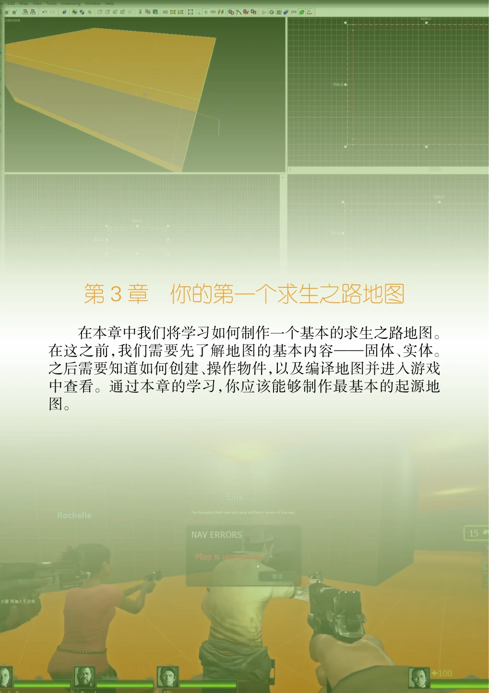
在本章中我们将学习如何制作一个基本的求生之路地图。在这之前，我们需要先了解地图的基本内容——固体、实体。之后需要知道如何创建、操作物件，以及编译地图并进入游戏中查看。通过本章的学习，你应该能够制作最基本的起源地图。
3.1 固体和实体（一）#
固体和实体是起源引擎中定义的对象，它们构成了整个起源引擎中的游戏世界。
3.1.1 固体#
- 1.定义
固体（Brush，又称「笔刷」）是使用 Hammer的固体工具（Block Tool）创建的凸面 3D 形状。关卡设计师们使用固体来定义世界a的形状（以及定义可见性b），也可以用于创建固体实体。
通俗地讲，就是一个简单的凸面几何图形，跟模型不一样，可以直接在Hammer中塑造形状。默认的固体形状是一个矩体。
在起源引擎制图界，提到「固体」，一般认为是矩体固体，除非有特别说明是什么形状的固体。
- 2.应用
固体是在起源引擎的所有地图中创建结构的基本单位。起源引擎中最基本的空间至少需要6个固体才能构建，即每个地图至少有6个固体存在。地板、墙面、天花板，等等这些非模型的几何体都由是固体构成的。固体构成了地图中的主要内容。
3.1.2 实体#
实体（Entity）是在起源1或起源2中定义为具有区别于「世界」（世界笔刷）c的特性的对象。
- 1.形式
起源引擎中实体的形式包括：
- •固体实体（起源2中不存在）
- •网格实体（仅起源2）
- •点实体
- •路径实体（仅起源2）
- （1）固体实体
- （1）
固体实体（Brush Entity，又称「固实体」）是金源引擎和起源引擎中的一种实体类型，通过将实体绑定到地图中的 BSP 几何固体来创建，为固体提供由与其绑定的实体定义的特定效果或能力。讲得通俗一点，就是一个拥有更多功能的固体，并且可以由多个固体组成一个固体实体。
- （2）点实体
点实体（Point Entity）是在网格上的特定位置点创建的实体，有些需要为它们选择模型才能充分发挥作用。
- （3）网格实体和路径实体
网格实体（Mesh Entity）取代了起源1和金源引擎中的固体实体。自从起源2不再使用BSP笔刷，需要与几何体绑定的实体现在被绑定到Hammer网格。
路径实体（Path Entity）是最近添加到工具中的一种实体类型。它们可以使用当前隐藏的路径工具（Shift+P）创建。
它们属于起源2的内容，与所有非起源2游戏无关，包括求生之路系列（至少现在是）。
- （4）内部性
实体按照内部性还可以分为内部实体和非内部实体。
内部实体（Internal Entity）是指由VBSPa处理，然后删除或合并到另一个实体中的实体。它们在地图运行时不存在，因此不会计入实体限制。
非内部实体（Non-Internal Entity）是除内部实体以外的所有实体。
- 2.应用
实体可以干非常多的事情。
实体是地图中重要的组成部分之一，一个地图中必须要有至少1个实体存在。
固实体是固体类型的实体，它的行为不像普通固体那样，它具有特殊的功能。点实体是通过实体工具放置的实体，每一个实体的位置对应一个点，所以叫「点实体」。
可以说，地图中的活动部分都是由实体完成的。比如按下按钮、播放动画、制作爆炸等等，都由实体来完成。实体在起源引擎中有着无法替代的功能，每一个起源引擎地图都不可能没有实体。玩家本身也是一个实体。在游戏运行中玩家手持的枪械、开火时的火焰、以及命中目标的效果，都会创建实体，所以引擎会动态的在游戏中创建实体。
细节内容也由实体完成，因为它们占用的资源一般比普通固体少，所以装饰工作主要由实体完成，比如旋转门、街道上的垃圾、垃圾箱等等装饰……
此外，实体还可以实现一些特定的功能，比如一辆可以驾驶的载具、自动炮塔……只要你能想到基本上是可以做到的。有些时候实体可能需要与游戏脚本配合实现更多功能。
总之，实体能做非常多的事情，可以说是「没有你做不到，只有你想不到」。
习题3#
- 一、选择题
- 1.固体（Brush）最常见的形状是什么？ A. 球体 B. 圆柱体 C. 矩体 D. 棱锥体
- 2.以下哪种对象不是实体的一种形式？ A. 固体实体 B. 网格实体 C. 凸面实体 D. 点实体
- 3.固体实体的创建方式是？ A. 在网格上放置一个点实体 B. 将实体绑定到地图中的BSP几何固体 C. 使用Hammer的光照工具创建 D. 在起源2中通过路径实体实现
- 4.以下哪个对象主要通过固体工具（Block Tool）创建？ A. 固体 B. 实体 C. 纹理 D. 动态光源
- 5.在起源引擎中，地图的基本几何结构由哪些对象组成？ A. 固体 B. 实体 C. 纹理 D. 脚本
- 6.起源引擎中的实体主要用于哪些功能？ A. 创建地图中的几何结构 B. 实现游戏中的动态行为，如按钮按下、动画播放等 C. 定义材质的细节 D. 提供高分辨率的纹理
- 7.以下哪个实体可以在游戏中动态创建，如枪械火焰或爆炸效果？ A. 固体 B. 固体实体 C. 内部实体 D. 点实体
- 8.在起源引擎的地图中，通常需要多少个固体来构建基本空间？ A. 4个 B. 5个 C. 6个 D. 8个
- 9.为什么在起源引擎中建议使用实体代替固体来创建细节？ A. 实体占用的资源较少，能提高性能 B. 实体具有更高的材质分辨率 C. 实体可以自定义颜色 D. 实体不会参与光照计算
- 10.什么是内部实体的主要特征？ A. 在地图运行时被删除或合并 B. 动态生成的实体 C. 只在Hammer中存在 D. 必须与网格实体结合使用
- 二、填空题
- 11.固体实体可以为固体提供特定的______或能力，使其拥有更多功能。
- 12.实体分为内部实体和______，其中内部实体在地图运行时不会存在。
- 13.在起源引擎中，地图中的______部分大多由实体完成，比如按钮、动画和爆炸效果。
- 14.网格实体（Mesh Entity）取代了起源1中的______实体，并在起源2中使用。
- 三、简答题
- 15.解释什么是固体，并描述其在起源引擎中的应用。
- 16.点实体与固体实体有何不同？请举例说明两者的不同应用场景。
- 17.详细描述起源引擎中的实体如何影响游戏的动态内容，并举例说明玩家与实体的互动。
- 18.讨论内部实体的作用以及它们与非内部实体的区别，为什么内部实体不会占用实体限制？
- 四、论述题
- 19.在起源引擎中，固体与实体如何协同工作来创建复杂的游戏场景？结合实例分析它们在地图设计中的角色。
3.2 基本对象操作#

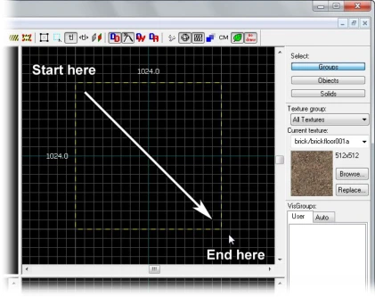
固体是在起源引擎的所有地图中创建结构的基本单位。地板、墙面、天花板，等等这些非模型的几何体都由是固体构成的。
3.2.1 创建固体#
选择固体工具
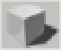
（Block Tool），然后在2D俯视图上拖拽（如图 3-2-1 所示），按下回车键以创建固体。如果你不能在3D视图中看到固体的纹理，请点击3D视图中左上角的「camera」→「3D Texture」。3.2.2 物体选择#

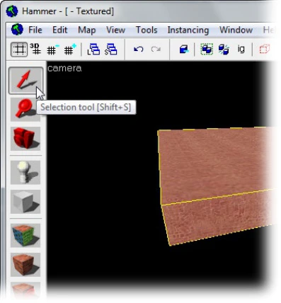
点击选择工具
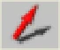
（Selection Tools）。它用于提取对象群体中的某个对象或一组对象。选择工具可以移动选定物体。激活选择工具后，在任意窗口点击固体可以将其标记为高亮。（二维窗口里请点击固体边缘或中心。在相机视图只要点击选取对象即可。）高亮的物体代表你选择的物体。被选择的物体会变成红色高亮状态，同时在二维视图中会有8个控制点。这些控制点允许你对被选物进行旋转与形变操作。你可以通过这些控制点调整物体的大小、角度。选中一个或若干个对象后，在选区内按住鼠标左键拖动可以移动这（些）个对象。
起源引擎中最基本的空间需要6个固体构建。通过6个固体，你可以建立一个封闭的空间，与虚空隔绝。
3.2.3 网格#
所有二维视图中都会显示网格（Grid）。默认情况下所有对象都会对齐到网格。
网格的默认大小是64单位，这表示每格都以64单位分割，即每个网格的边长为64单位。通过按键「 [ 」或「 ] 」可以控制网格的大小。
点击更小网格图标
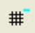
（或按下「 [ 」键）可以把网格减至之前的一半大小以增加调节精度。点击更大网格图标
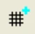
（或按下「 ] 」键）可以把网格增至之前的两倍大小以进行大比例调节。3.2.4 旋转与形变操作#

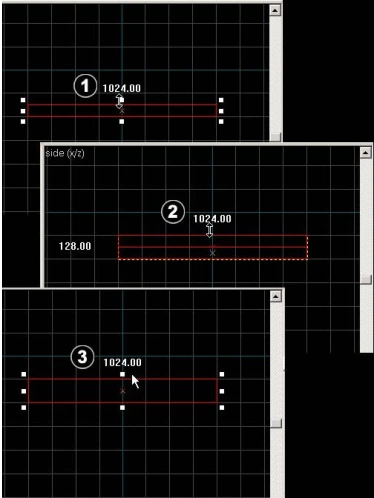
它包括缩放、旋转与倾斜。下面我们来逐个了解：

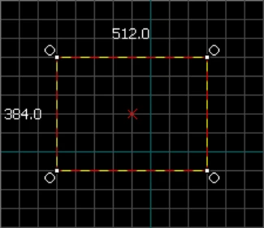

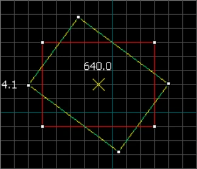
缩放：用选择工具选取固体 并将鼠标放在八个控制点中的某个上。这时指针会变成箭头，箭头指示控制点可以操作的方向。只要简单的点击并拖拽这些控制点就可以进行缩放。
旋转：用选择工具选取要旋转的对象，然后在被选对象上点击一次。这时你应该会看到被选对象四角出现了圆圈。（如图 3-2-4 和图 3-2-5 所示）
鼠标在任意二维视图中的圆圈上点击并拖拽以旋转对象。
倾斜：用选择工具选取你要倾斜的对象，然后在被选对象上点击两次。你应该能看到被选对象四边的都出现了白色方块。把鼠标放在任意二维视图的白点上，然后点击并沿着坐标轴方向拖拽以倾斜对象。

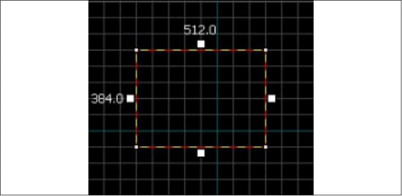

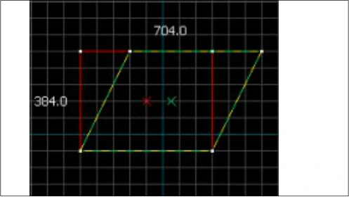
3.2.5 坐标系#
- 1.全局坐标系
我们之前在1.1中有提到过起源引擎中的坐标系。起源引擎中的坐标系和空间直角坐标系（三维笛卡尔坐标系）类似。该坐标系满足右手定则，是标准坐标系，即X轴的正方向是向右，Y轴的正方向是向前，Z轴的正方向是向上。
起源引擎中的坐标表示为（X，Y，Z）。坐标系把整个空间划分为八个卦象。
在每个二维视图上看，存在4个象限，与平面直角坐标系中的象限一致。正方向分别是向右、向上。

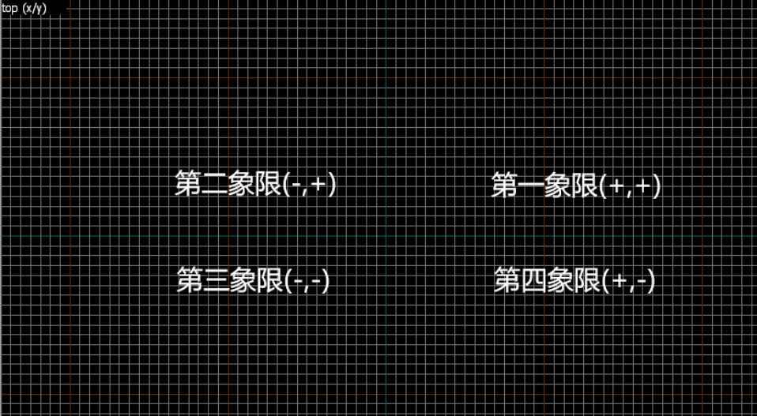

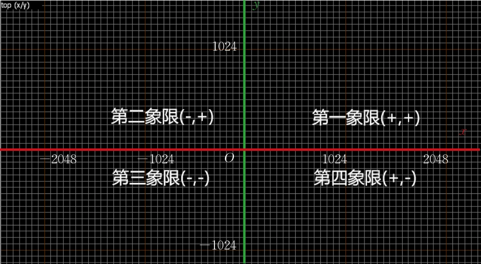
- 图 3-2-8俯视图上的象限
在Hammer的2D视图中，蓝色的网格线代表坐标轴。棕色的网格线是1024单位长度a分割线，即网格每1024个单位长度分割一次，每个相邻且平行的棕色网格线之间的距离为1024个单位长度。在一个起源引擎地图中，坐标的取值范围是［-32768，32768］（即［-215,215］），这是地图的空间大小。
所有物体的坐标均不得超过上述范围（即不能在地图之外）。在编译地图时，如果有物体的坐标超出了取值范围，那么编译地图时可能会出现问题，且编译器可能拒绝编译地图。通常来说，我们一般把物体放的离地图边界（即要远一些，至少保持1024个单位的距离。太过靠近地图边界容易出现问题。
一般地，一组坐标会和一组旋转角度一起保存。
在全局坐标系中，X轴的正方向是东方，Y轴的正方向是北方。全局坐标系的坐标原点为（0,0,0），即三条蓝色网格线的交点。
- 2.局部坐标系
一般地，全局坐标系或者绝对坐标系指的是相对于世界（实体worldspawn）的坐标。而其他坐标系均是实体的本地坐标系。在这里，我们称之为局部坐标系。
对象的原点是其局部坐标为(0,0,0)的点。它是局部坐标相对的数学中心。然而，它很少是可见对象的中心。同一个实体中可以有多个原点：它自己的原点、其模型的原点等。每个原点都定义了自己相对于其父级的局部坐标系。
- 3.旋转角
- （1）概述
起源引擎中的旋转角称为QAngle。QAngle是Source中的一个C++类，表示遵循右手定则的三维外部泰特-布莱恩角（Tait-Bryan Angles），偏移自基准Z轴。每个QAngle包含三个vec_ta旋转数值：
- •X：X轴的俯仰角（Pitch）。+：向下/-：向上；
- •Y：Y轴的偏航角（Yaw）。+：向左/-：向右；
- •Z：Z轴的滚转角（Roll）。+：向右/-：向左。
例如，QAngle（-45，10，0）意味着向上旋转45°，向左旋转10°，滚转角为0°，即绕X轴顺时针旋转-45°，绕Y轴顺时针旋转10°，绕Z轴顺时针旋转0°。注意，这里的顺时针方向是当你站在全局坐标系的原点，朝向所述坐标轴的正方向时所看到的顺时针方向。
- （2）方向
这些角度其实是泰特-布莱恩角。这些角度遵循外部旋转约定（extrinsic rotations）：
外部旋转是围绕固定坐标系xyz轴进行的基本旋转。XYZ系统旋转，而xyz保持固定。从XYZ与xyz重叠开始，可以使用三个外部旋转的组合来达到XYZ的任何目标方向。欧拉或泰特-布莱恩角度（α，β，γ）是这些基本旋转的幅度。例如，可以按以下方式达到目标方向（请注意欧拉角应用的逆序）：
XYZ系统围绕z轴旋转γ。现在，X轴与x轴成γ角度。
XYZ系统再次旋转，但这次围绕x轴旋转β。现在，Z轴与z轴成β角度。
XYZ系统再次围绕z轴旋转，旋转角度为α。
总之，三个基本旋转围绕z、x和z轴发生。事实上，这个序列通常被表示为z-x-z（或3-1-3）。与适当的欧拉角和泰特-布莱恩角度相关联的旋转轴组通常使用这种符号命名（有关详细信息，请参见上文）。
如果旋转的每一步都作用于旋转坐标系XYZ，那么旋转是内在的（Z-X'-Z''）。内在旋转也可以表示为3-1-3。
在数学上严格来说，QAngle被定义为外部泰特-布莱恩角，遵循右手定则。
打个比方，对于一架飞机而言，俯仰角（Pitch）使机头上下移动，偏航角（Yaw）使机头左右移动，滚转角（Roll）使一侧机翼上升，另一侧机翼下降。
简单来说，你可以认为一个QAngle（α，β，γ）是指以每个坐标轴对应的顺时针方向分别绕X、Y、Z轴旋转α、β、γ所形成的角。这里的顺时针方向是指当你站在全局坐标系的原点（0,0,0）时视线朝向对应坐标轴的正方向时所看到的顺时针方向。
- （3）具体理解
是不是觉得上面的描述太抽象难懂了？别担心，正所谓实践是检验真理的唯一标准，我们来在Hammer中进行一些具体操作。
打开Hammer（或Hammer++）并新建一个工程文件。我们分别沿着坐标轴正方向创建三个矩体固体：

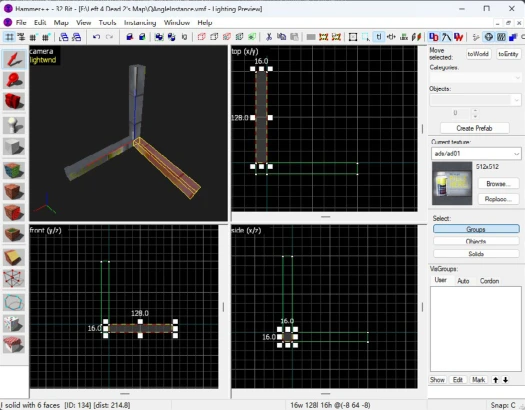

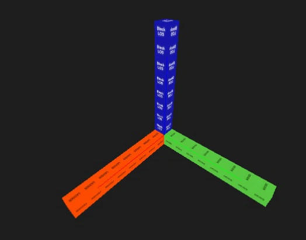
为了便于区分，我们给x轴、y轴、z轴分别用一些工具纹理来上色。这些固体长128个单位，宽度和厚度是16个单位。

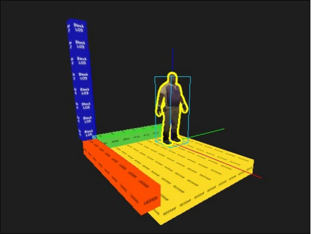
为了便于放置实体，我们把在xOy平面上的那两个代表坐标轴的固体所围成的矩体体积用固体填充。
随后，选择实体工具并放置一个info_survivor_position实体。当我们选中一个实体时，会发现实体的原点有三条坐标轴颜色的线延伸。没错，这三条线代表了实体的局部坐标系是怎么样的。默认情况下（第一次放置实体时），它们和全局坐标系是同向的。
打开info_survivor_position的物体属性对话框界面，在类信息（Class Info）选项卡中，找到键值Pitch Yaw Roll（Y Z X）。这个键值指示了实体要怎么旋转。其中，俯仰角（Pitch）是绕Y轴旋转，偏航角（Yaw）是绕Z轴旋转，滚转角（Roll）是绕X旋转。旋转正方向定义：从原点看向对应坐标轴时，顺时针转动即为正方向。下面我们来验证这个结论。
我们采用控制变量法来验证。
我们先改变Pitch Yaw Roll里的Pitch的值，其他保持为0。我们依次改变Pitch的值为30、45、60、90：每次更改后按回车应用更改，然后记录现象。
我们也对其他的另外两个值也做类似的事情，保持另外两个轴的角度值保持不变（0）。

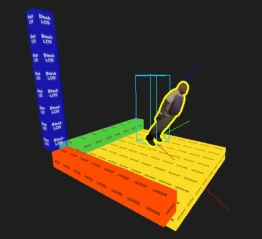

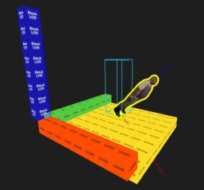

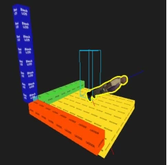

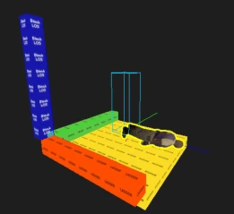

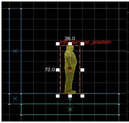

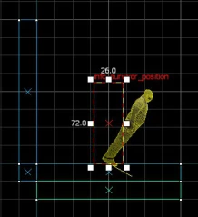

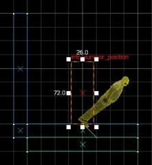

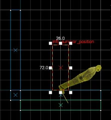

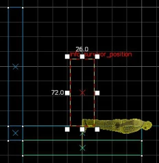

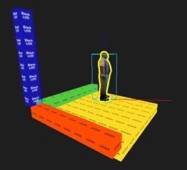


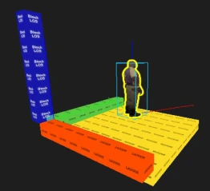

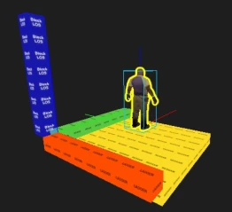

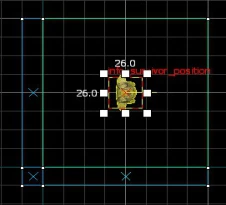

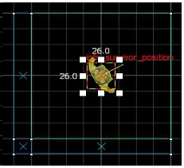

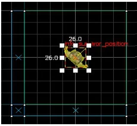

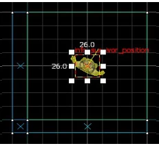

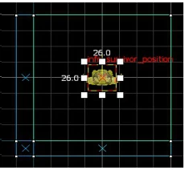

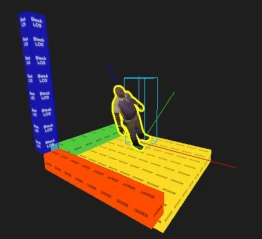

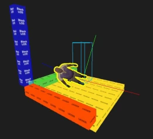

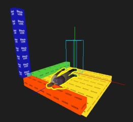

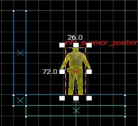

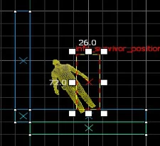

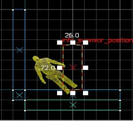

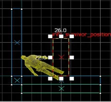

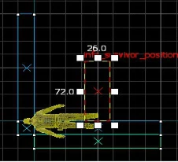
你可能会发现为什么在正视图上，Coach在逆时针旋转呢？别急，你再仔细观察3D视图：沿x轴的正方向看去，模型是在沿顺时针方向旋转的。这也说明了，我们的正视图其实是视线从x轴的正半轴指向负半轴方向的正交视图，而其他两个正交视图则与其对应的轴的正方向相同。
从我们的实验中，可以看出俯仰角（Pitch）确实是让Coach的头部上下转动了（身体前倾或后仰），偏航角（Yaw）则让Coach水平旋转，就跟你水平转头看向其他方向一样，而滚转角（Roll）则让我们的身体向左右两侧倾斜。
现在，想必你已经理解了起源引擎里的旋转角了吧？如果没搞懂，那就请去实践吧！实践出真知。
综上，旋转的正方向是从轴的负方向看向正方向时，绕坐标轴顺时针转动的方向。给旋转角提供一个负的角度值，那么就是绕坐标轴逆时针旋转。
另外，角度值的取值范围可以是大于360度的。不在［0,360］范围内的角度总是可以通过加上或减去整数倍的360来得到正常范围内的角度值。如果了解过弧度制，应该非常容易理解{角度总是可以转为α+2kπ，k∈Z，其中α∈［0,2π）}。
- 习题4
- 一、选择题
- 1.在Hammer中，哪个工具用于创建凸面3D几何形状的固体？ A. 选择工具（Selection Tool） B. 固体工具（Block Tool） C. 旋转工具（Rotate Tool） D. 移动工具（Move Tool）
- 2.如何在2D视图中创建固体？ A. 选择固体工具并拖拽，然后按Enter键 B. 按住Shift键并单击创建 C. 选择选择工具并按空格键 D. 右键点击并选择「创建固体」
- 3.如果在3D视图中无法看到固体的纹理，该如何解决？ A. 切换到「3D Wireframe」视图 B. 选择「3D Texture」视图 C. 切换到「2D Top」视图 D. 关闭Hammer编辑器并重启
- 4.在Hammer中，选择工具（Selection Tool）的作用是什么？ A. 仅用于选择物体 B. 用于选择和移动物体 C. 仅用于删除物体 D. 仅用于修改物体纹理
- 5.当物体被选择后，物体会呈现什么状态？ A. 红色高亮 B. 蓝色高亮 C. 绿色高亮 D. 无变化
- 6.在Hammer中，如何调整物体的大小？ A. 按住Alt键并拖拽 B. 通过选择工具的控制点 C. 按住Ctrl键并拖拽 D. 右键点击并选择「调整大小」
- 7.按下「 [ 」或「 ] 」键在Hammer中可以实现什么操作？ A. 调整光源强度 B. 改变网格大小 C. 旋转物体 D. 调整物体的纹理
- 8.在Hammer中，默认网格的大小是多少？ A. 32单位 B. 64单位 C. 128单位 D. 256单位
- 9.取消对齐到网格的快捷键是哪个？ A. Alt键 B. Ctrl键 C. Shift键 D. Tab键
- 10.下列哪个操作可以通过选择工具完成？ A. 创建实体 B. 改变物体的纹理 C. 旋转和缩放物体 D. 调整光照强度
- 11.起源引擎的基本坐标范围是？ A. [-1024, 1024] B. [-32768, 32768] C. [-65536, 65536] D. [-8192, 8192]
- 12.旋转角QAngle的X轴旋转代表什么？ A. 俯仰角（Pitch） B. 偏航角（Yaw） C. 滚转角（Roll） D. 移动角度
- 13.当选中的对象出现圆圈控制点时，你可以对对象进行什么操作？ A. 缩放 B. 移动 C. 旋转 D. 改变纹理
- 14.在Hammer中，当物体的控制点出现在边框四条边的中心时，这意味着你可以对物体进行哪种操作？ A. 缩放 B. 倾斜 C. 改变光照 D. 删除
- 15.在起源引擎中，如何表示对象的旋转角度？ A. XYZ坐标 B. QAngle（俯仰角、偏航角、滚转角） C. 局部坐标 D. 全局坐标
- 二、填空题
- 16.在Hammer中，默认情况下每个网格单位的大小是______，可以通过按「 [ 」和「 ] 」键来增大或减小网格的大小。
- 17.取消对齐到网格的快捷键是______，而使用______可以在移动物体时临时取消对齐。
- 18.起源引擎中的全局坐标系与局部坐标系的主要区别是，前者是相对于______的绝对坐标，而后者是相对于对象______的相对坐标。
- 19.QAngle表示旋转角，其中X轴表示______，Y轴表示______，Z轴表示______。
- 三、简答题
- 20.解释网格在Hammer中的作用以及为什么不建议关闭网格或取消对齐到网格。
- 21.在Hammer中，如何使用选择工具对固体进行旋转、缩放和倾斜操作？请列出具体步骤。
- 22.什么是全局坐标系和局部坐标系？请简述它们在对象操作中的不同应用场景。
3.3 制作你的第一个求生之路地图#
3.3.1 创建一个地板固体#
利用第 25 页上的「3.2 基本对象操作」 中的内容来创建一个固体。
调整地板的厚度为16个单位，长宽为512单位。
通过在Hammer中设置Arrow keys nudge selected object/vertex选项，你可以通过方向键移动物体。步骤：点击菜单栏上的Tools > Options，在弹出的界面中选择「2D Views」选项卡，标记复选框Arrow keys nudge selected object/vertex，确定并关闭页面。
3.3.2 导航（在视图中移动）#
在2D视图中移动：
- •可以通过滚动条来调整。
- •按住空格，然后按下鼠标左键并拖动以移动视图。
- •使用鼠标滚轮来调整缩放级别。
在3D中移动有点不同于2D视图：
- •按住空格和鼠标左键并拖动以便旋转镜头。
- •按住空格和鼠标右键并拖动以便上/下和左/右移动。
- •按住空格和鼠标左右两个键并拖动以便向前和向后移动。
- •你也可以用W、A、S和D来分别向前移动，向后移动，向左平移和向右平移。
- •Z键切换「鼠标观察」模式的开关。移动你的鼠标光标到3D镜头视图的上方并按Z键。你现在可以移动你的鼠标了,就好像在游戏里面那样。
WASD这四个键可以与空格组合使用。
3.3.3 纹理#

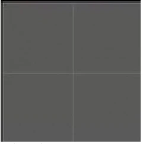

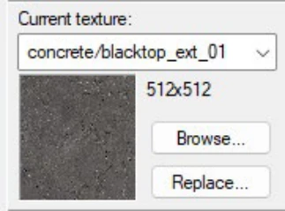
点击3D视图中左上角的「camera」>「3D Texture」以在3D视图中查看纹理（Texture）。
- 1.查看、浏览并选择纹理
在你刚刚创建的固体中，你会看到一个默认纹理在固体表面。如果你想要更换它，则需要在纹理栏中点击Browse...（浏览…）按钮，该操作会弹出纹理浏览器窗口。
你可以在纹理库中浏览你需要的纹理。浏览器窗口中，有一个「filter」，在这里填写搜索名称。在开发阶段我们默认使用开发专用纹理「dev/dev_measure」系列。

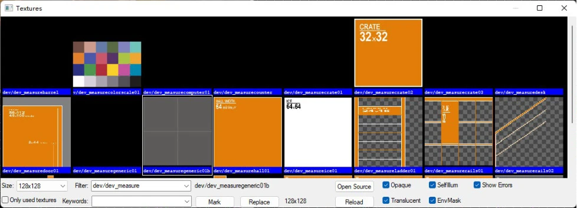
在「filter」中输入「dev/dev_measure」之后，选择灰色纹理（如图 3-3-1 中所示的纹理）（双击一个纹理以选择）。
- 2.
应用纹理
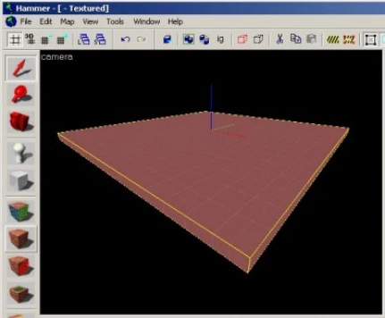
图 3-3-3 应用 dev/dev_measuregeneric01b纹理

选择纹理后，纹理浏览器会关闭。纹理栏中的纹理应该会变成你选择的纹理。要将纹理应用于固体，请选中需要应用纹理的固体，并在工具栏里点击 应用当前纹理工具。
3.3.4 创建天花板和墙壁#
现在让我们来看看如何创建房间的墙壁和天花板。最简单的方法就是「复制」地板固体。
- 1.使用固体工具
使用固体工具依次建立天花板和墙壁，步骤与创建地板固体相同。先选中一个固体，再使用固体工具时，情况会有所不同。
当选中一个固体再使用固体工具时，被选中的物体就会成为「参照物」。这个功能很有用，可以帮助我们快速创建固体。详情如下：
当选中固体再使用固体工具时：
- •在俯视图（top）上创建固体时，固体的长宽（X、Y轴）由你决定，固体的高及它的Z轴位置由参照物决定（Z轴与参照物相同）。
- •在正视图（front）上创建固体时，你决定固体的Y、Z轴，参照物决定固体的X轴。
- •在侧视图（side）上创建固体时，你决定固体的X、Z轴，参照物决定固体的Y轴。
综上，我们可以发现，当你选择了由若干个物体组成的整体后，再使用固体工具在平面上创建新固体时，由于缺失另一个轴的值（一个平面只能决定2个轴的值），所以另一个轴的值会使用默认值，而选中物体再创建时则会使用该物体的坐标值补充该平面上缺失的坐标值。
更形象的过程可以观看视频https://www.bilibili.com/video/BV1d54y177Jj?p=1。
- 2.复制（克隆）
你也可以选择一个已存在的固体并复制来创建它们。步骤如下：
- •选择你已经创建的地板固体。
- •将你的光标移到侧面视图。
- •按住Shift键并用鼠标向上拖动一个网格以复制选中的固体。
简单来说，按住Shift键再进行移动操作时会复制对象，并保留原来的对象。这将创建一个完全像现有地板上的地板刷。按住Shift键时，每完成一次移动操作就复制一次移动的对象。
你现在可以更改这个新固体的大小和尺寸，以创建一个墙。现在制作一个128个单位高和一个16个单位厚的墙壁。（长为地板长，宽为16单位，高为128单位）
然后复制3次你创建的墙壁，这样你的地图中就有了4个墙壁。
再复制一次地板并将其移动到墙壁的上方，以创建天花板。
注意，在创建墙壁时，请不要让墙壁相互重叠，而是类似积木拼接一样，如图 3-3-4 左图所示。
创建完成后，你应该创建了一个房间（如图 3-3-4 右图所示）

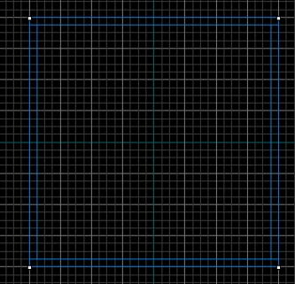

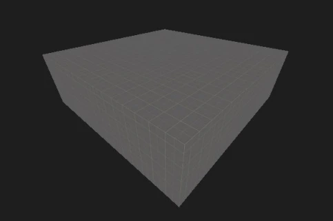
若要删除物体，请选中这些物体，并按下「Delete」键。

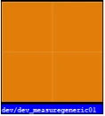
3.3.5 多重选择#
你会注意到，在镜头视图中，如果你在房间内导航，很难知道发生了什么，因为所有的墙壁、地板和天花板都是使用相同的纹理。接下来我们将墙改变为不同的纹理。
按住Ctrl键并依次选择4面墙。你还需要在3D视图中按下Z键或者按住空格键以旋转视图并选择4面墙壁。选中后，打开纹理浏览器，选择灰色纹理旁边的那个橙色纹理。然后使用工具栏里的 应用当前纹理工具（Apply Current Texture）来应用这个橙色纹理到墙壁上。

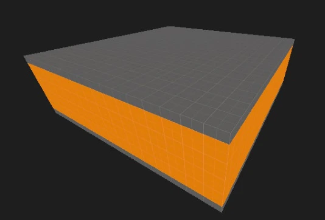

3.3.6 保存#
要保存一个关卡，你可以使用Ctrl+S或者文件菜单（File）下的保存（Save）。如果是第一次保存，则Hammer会询问你地图的文件名及保存路径。本教程的教程文件保存在Left 4 Dead 2（游戏目录）\sdk_content\mapsrc\下（例如C:\Program Files\Steam\steamapps\common\left 4 dead\sdk_content\mapsrc\）。教程中文件名保存为tutorial01.vmf。（文件名不能包含中文等特殊字符）
3.3.7 放置实体#
- 1.


接下来我们将放置你的第一个实体。首先，在工具栏上点击 实体工具（Entity Tool）（然后对象栏将可以选择实体），转到对象栏的Objects下拉列表里选择info_survivor_position。选定后，在3D视图里点击一下地板（在地板中心）上，会出现一个Coach。info_survivor_position是一个生还者位置，你可以强制让生还者站在这个位置上。
- 2.

接下来，我们放置一个灯光实体。灯光实体可以提供光源，以照亮世界。如果没有灯光实体，你的地图将会是全亮的或者全暗的，因为你的地图中没有光源。
重复上述放置实体的步骤，但选择「light」实体。我们一般将光源放在天花板上方。点击天花板的固体，你就会看见一个灯泡如图 3-3-8 所示。
light实体会创建一个全向的光源（360°）。这个光源会从它的位置向四面八方发射光线。它也有一些额外参数（键值，Keyvalues），双击该实体或者选中该实体并按下Alt+Enter以打开它的属性界面（如图 3-3-9 所示）。
你可以更改光的颜色，即在「Brightness」键值里更改。点击该键值后，界面右侧有一个「Pick Color」的按钮，允许你选择一个颜色而不是输入数值。在教程中我们保留默认值（白色）。选择完毕后应用键值并关闭light实体的属性界面。

这样，你就创建了一个光源。接着，在创建的第二个房间也放置一个光源实体。
- 3.

通过道具实体，你可以放置各种各样的模型在地图里。不同的道具实体有着不同的功能。下面我们来放置一个静态道具实体。
静态道具实体（prop_static）顾名思义，它是一个完全静态的、不会发生变化的道具。静态道具实体不会移动，也不能移动，是一个固定位置的模型。除了碰撞，不包含其他物理性质，并且无法被打碎。它不能播放模型动画，不能拥有关节。它可以被投射光照贴图。静态道具渲染起来是廉价的（对性能影响很小）。prop_static是一个点实体。
根据静态道具的特性，它就是放一些固定不变的内容，比如岩石、电线杆、墙、管道、灯具等。

下面我们通过prop_static放置一个桌子。
选择实体工具，在实体下拉列表中选择「prop_static」实体，并放置在地板上。打开它的属性，然后你应该能看到一个名为「World Model」的键值，双击它或者单击它再点右侧的「Browse...」以打开模型浏览器。
在模型浏览器中的filter输入「table」，找到一个桌子。双击一个模型或者单击一个模型再点「OK」以选定一个模型。此时模型浏览器会关闭并返回到属性界面。你可以按一下Enter键或者单击「应用（A）」来在3d视图中显示你选择的模型（应用、更新属性）。
接下来把它放到一个墙角里，在教程中我们把它放在info_survivor_positon前面左侧的墙角。
你可能需要调整角度，以便桌子摆正。通过第 27 页上的「旋转与形变操作」 内容的「旋转」操作，以调整角度。或者，你可以通过修改Pitch Yaw Roll (Y Z X)键值来旋转物体。
现在你就完成了一个静态道具（prop_static）的创建。
3.3.8 放置枪械#


接下来，放置一个weapon_spawn实体。weapon_spawn是一个用于任意非近战武器的可配置武器生成器。你可以随便在地面（固体）上点一下，将该实体放置。该实体外观应该是一个「M-16突击步枪」的模型，如图 3-3-12所示。
然后，将其移动到桌子上方，并通过旋转该实体使得其看起来是平放在桌子上的，如图 3-3-13 所示。
你可以双击该实体或者点击再按下Alt+Enter打开Hammer物体属性对话框（Hammer Object Properties Dialog）。
里面有许多键值可以供你修改。在物体属性对话框中的「标志」标签页（Flags）里，有「Must Exist」和「Infinite items (overrides count)」两个标志，其中第一个是要求强制刷新，第二个则是使该武器生成点可以无限次拿取。
在教程中，我们勾选「Must Exist」标志，以防止武器没有刷新（导演可以根据实际情况控制物资的刷新）。回到「Keyvalues」标签页，在这里你可以控制键值Count，顾名思义，这个键值指的是这个生成点有多少个物品，默认值为5（如果使用标志Infinite items则会覆盖该键值）。
键值Selection允许你决定该武器生成点生成的武器或者武器类型。详情如下：
| 值 | 描述 | 翻译 |
|---|---|---|
| any | Any primary or secondary weapon | 任意主或副武器 |
| any_pistol | Any Pistol | 任意手枪 |
| weapon_pistol | Pistol | 手枪 |
| weapon_pistol_magnum | Magnum Pistol | 马格南手枪 |
| any_primary | Any Primary Weapon | 任意主武器 |
| tier1_any | Any tier 1 primary | 任意一阶主武器 |
| tier2_any | Any tier 2 primary | 任意二阶主武器 |
| any_smg | Any tier 1 SMG | 任意一阶冲锋枪 |
| any_rifle | Any tier 2 Rifle | 任意二阶步枪 |
| any_sniper_rifle | Any tier 2 Sniper Rifle | 任意二阶狙击步枪 |
| any_shotgun | Any Shotgun | 任意霰弹枪 |
| tier1_shotgun | Any tier 1 Shotgun | 任意一阶霰弹枪 |
| tier2_shotgun | Any tier 2 Shotgun | 任意二阶霰弹枪 |
| weapon_smg | SMG | 冲锋枪 |
| weapon_smg_silenced | Silenced SMG | 消音冲锋枪 |
| weapon_pumpshotgun | Pump Shotgun | 泵动式霰弹枪 |
| weapon_shotgun_chrome | Chrome Shotgun | 铬管霰弹枪 |
| weapon_autoshotgun | Auto Shotgun | 战术霰弹枪 |
| weapon_shotgun_spas | SPAS Shotgun | 战斗霰弹枪 |
| 续表 | ||
| 值 | 描述 | 翻译 |
| weapon_rifle | M4 Rifle | M-16突击步枪 |
| weapon_rifle_desert | Desert Rifle | 战斗步枪 |
| weapon_rifle_ak47 | AK47 | AK-47 |
| weapon_hunting_rifle | Hunting Rifle | 猎枪 |
| weapon_sniper_military | Sniper Military | 狙击步枪 |
| weapon_smg_mp5 | MP5 | MP5冲锋枪 |
| weapon_rifle_sg552 | SG552 | SG552突击步枪 |
| weapon_sniper_awp | Sniper AWP | AWP狙击枪 |
| weapon_sniper_scout | Sniper Scout | Scout狙击枪 |
- 表 3-3-1键值Selection中可使用的值
在教程中我们保留默认值。可以看出，上表中并没有近战武器。所以weapon_spawn实体只生成枪械。
接着，复制这个weapon_spawn实体的另一个副本。
现在你就有了2个会随机生成的武器，每一局生成的武器可能不同，也可能相同。
3.3.9 添加房间#
在你的房间使用复制、缩放和移动你目前有的固体，你现在可以建立一个走廊和与第一个房间相同的另一个房间，确保在走廊上的两个房间都开放。
你还可以复制第一个房间中的灯光，并将其移动到第二个房间的中间。
现在你应该创建了如图 3-3-14 所示的房间。

3.3.10 添加玩家出生点#

最后我们要做的是添加一个「玩家出生点」实体来测试地图。这将是玩家将在一个简单的关卡里出生的地方。
- 1.在工具栏里选择实体工具。
- 2.从对象下拉列表中点击info_player_start。
- 3.现在，在「相机」视图中导航到Coach模型旁边的房间中心。
- 4.左键点击地板以放置玩家出生点。
3.3.11 运行关卡#
你已经保存你的地图，但是在游戏里试玩之前你也需要编译它。

当一个地图被编译后，你刚保存的.VMF格式的文件会被转换为用于游戏的.BSP格式。处理几何形状，并且利用若干编译程序预先计算适当的照明和阴影。（经过VBSP、VVIS、VRAD三个程序的处理）
- •打开File菜单，然后选择Run Map...或者按F9键。
- •Run Map对话框将被打开。（如图 3-3-16 ）
- •该对话框用来设置一些基本的编译参数。
- 1.确保在Run BSP、Run VIS和Run RAD设置下面的Normal已经被选中。（①）
- 2.在Additional game parameters:下面，确保这些设置存在，如果没有就输入它们： -toconsole -dev -console +sv_lan 1（②）
- 3.现在点击OK按钮来开始地图编译过程。（③）
- 1.
编译进程窗口（Compile Process Window）将显示编译过程。编译完成后，游戏会自动启动并加载你的地图。
如果没有复选「Don't run the game after compiling」，你将在编译完成后打开游戏并加载地图。
当游戏启动后，「Map is unplayable!」对话框会立即出现。c如果是这样，那就对了，因为我们还没有为我们的关卡创建导航文件。你将在本教程后面了解导航文件。
请注意，因为没有导航文件，幸存者电脑将不会完全响应（不会移动，但可以进行射击）。
3.3.12 游戏开发者控制台#
控制台绝大部分玩家应该都知道。游戏控制台在进行地图调试时是非常重要的，因此，你需要打开游戏控制台。在主菜单中，点击「选项」→「键盘/鼠标」，在里面找到「允许启用开发者控制台」并设置为「已启用」。启用后，你按下「｀」键（有「～」的键）时会弹出控制台界面。在游戏调试中，通常需要打开sv_cheats为1，因为许多功能属于作弊指令（影响游戏的行为）。通过开发者模式启动到游戏通常是启用作弊的。
以下是一些有用的调试命令：
director_stop：禁用人工智能导演系统（英文：AI Director）a。丧尸将停止刷新。
director_start：启用人工智能导演系统，丧尸将开始生成。
noclip：允许你「穿墙」。
map <地图名>：加载/重载一个地图。
z_spawn：生成一个普通感染者（CIb）。
changelevel <地图名>：在游戏中时继续加载地图（切换关卡）。
z_spawn <特殊感染者名>：生成一个指定的特殊感染者（SIc）。
god 1：众所周知，使生还者无敌。
director_force_panic_event：强行让导演刷一波尸潮。
sb_stop 1：使生还者AI停止活动。
nb_blind 1：让感染者看不见玩家。
nb_delete_all：在当前游戏会话中把所有非玩家角色踢出。
nb_delete_all <队伍名称>：如果指定了队伍名称，则将该队伍内的所有非玩家角色踢出当前游戏对话。比如nb_delete_all infected会把所有非玩家控制的被感染者踢出当前游戏对话。
你的求生之路游戏目录下存在一个官方的示例地图集，它是...\steamapps\common\Left 4 Dead 2\sdk_content\mapsrc\Your_First_L4D_Level_Tutorial。
- 习题5
- 一、选择题（15道）
- 1.在Hammer中，创建地板固体时推荐的厚度是多少单位？ A. 8单位 B. 16单位 C. 32单位 D. 64单位
- 2.如何通过快捷键移动选定的物体或顶点？ A. 使用鼠标滚轮 B. 按住Alt键并拖动 C. 使用方向键 D. 按住Shift键并移动
- 3.在Hammer中，默认网格的大小是多少单位？ A. 16单位 B. 32单位 C. 64单位 D. 128单位
- 4.在3D视图中移动相机时，按住空格键并拖动鼠标左键的效果是什么？ A. 放大视图 B. 旋转相机 C. 前后移动相机 D. 上下左右平移相机
- 5.你如何通过实体工具（Entity Tool）放置生还者位置？ A. 选择info_survivor_position并点击地板 B. 选择prop_static并点击墙壁 C. 选择light实体并放置在空中 D. 选择info_player_start并放置在天花板
- 6.在Hammer中，按住Shift键并移动选定的物体会产生什么效果？ A. 删除物体 B. 克隆物体 C. 锁定物体位置 D. 改变物体大小
- 7.如何切换到「鼠标观察」模式以在3D视图中像游戏中那样移动？ A. 按Z键 B. 按Shift键 C. 按WASD键 D. 按住Alt键
- 8.在纹理浏览器中查找开发专用纹理时，输入哪个关键词可以找到「dev_measure」系列纹理？ A. dev/dev B. dev/dev_measure C. dev_texture D. filter_texture
- 9.以下哪种实体用于创建静态道具模型？ A. prop_physics B. prop_dynamic C. prop_static D. prop_vehicle
- 10.在Hammer中，如何为对象应用新的纹理？ A. 选择固体工具并更改纹理 B. 通过纹理浏览器选择纹理并使用「应用当前纹理」工具 C. 在选择工具中直接点击固体并选择纹理 D. 使用实体工具来选择纹理
- 11.创建房间的墙壁时，墙的标准高度通常是多少单位？ A. 64单位 B. 128单位 C. 256单位 D. 512单位
- 12.以下哪个编译工具用于计算地图中的光照？ A. VBSP B. VVIS C. VRAD D. VPK
- 13.如何在地图中放置玩家出生点？ A. 选择实体工具，点击info_player_start B. 使用选择工具并选择survivor实体 C. 通过prop_static实体生成 D. 使用光源实体
- 14.在Hammer中，如何复制一个现有的固体以创建类似的物体？ A. 按住Shift键并拖动固体 B. 按住Ctrl键并选择「复制」 C. 使用选择工具并按住Alt键 D. 按住Tab键并拖动
- 15.在编译地图时，如何确保使用了正确的游戏参数？ A. 在Run Map对话框中设置-toconsole -dev -console +sv_lan 1 B. 使用光源工具添加参数 C. 手动编辑.BSP文件 D. 使用实体工具添加到地图中
- 二、填空题（5道）
- 16.在Hammer中，地板固体的推荐厚度为______单位，长宽为______单位。
- 17.按住______键并使用鼠标移动，可以快速复制选中的固体并创建新的对象。
- 18.在纹理浏览器的「filter」栏中输入______可以找到开发专用纹理「dev_measure」系列。
- 19.使用实体工具时，在对象栏下拉列表中选择______可以放置玩家的出生点。
- 20.在编译地图之前，你可以按下______键打开「Run Map」对话框并设置编译选项。
- 三、简答题与论述题（5道）
- 21.解释如何在Hammer中创建一个完整的房间，包括地板、墙壁和天花板的创建步骤，以及如何确保它们不重叠。
- 22.在纹理浏览器中，如何查找并应用合适的纹理到不同的墙面和地板上？请简述步骤。
- 23.为什么在Hammer中复制固体是一种提高效率的做法？请结合实例说明复制和调整固体的操作。
- 24.如何放置和调整实体（如光源和道具）来增强地图的可玩性？请结合实际说明不同实体的作用。
- 25.在地图调试过程中，如何通过控制台命令调试地图并解决常见问题？请列出常见的调试命令和它们的用途。
3.4 梯子#
打开上一节的tutorial01.vmf，并另存为tutorial02.vmf：
- •点击File（文件）选项卡，然后选择Save As...（另存为...）。
- •将文件名命名为tutorial02.vmf。
本节我们将学习如何建立一个可攀爬的梯子。
3.4.1 建造房间#
首先，选中第二个房间（与起点相对的那个房间）的天花板，然后把它向上移动128个单位。
选中墙壁固体，复制并向上移动a128个单位。此时会出现一个洞，你应该能看到外面漆黑的空间（教程中使用Hammer++进行演示，因此外面漆黑的空间将显示天空盒）。（如图 3-4-1 所示）

这个洞会导致泄露（Leak）b。泄露将导致地图无法正常运行，所以我们需要修复它。
修复它的办法很简单，只需要把那个洞用固体封住。你可以把那个洞旁边的墙壁拉长来堵上这个洞，或者使用一个新的固体来堵上这个洞。总之，只要这个洞被固体封住了，泄露就解决了。（如图 3-4-2所示）

3.4.2 创建窗台#
现在在3D视图中选择第二个房间中后墙的下部，使用顶部视图，将墙扩大到房间，使其宽128个单位，形成一个窗台。

3.4.3 改变固体面的纹理#
你会注意到， 应用当前纹理工具会对选中的固体的全部面都应用相同的纹理。这意味着你无法设置一个固体上单个面的纹理。
现在我们将学习如何对单个固体面进行编辑。点击工具栏上的 纹理应用工具（Texture Application Tool）按钮。这将打开纹理面编辑页（Face Edit Sheet）。
现在，你应该可以选中单个或多个面而非固体这一对象。
把天花板和地板都应用为灰色纹理（dev/dev_measuregeneric01b）。
你可以先选取一个面，这将复制这个面的属性，此时右击其他面时会将整个面的设置粘贴到右击的那个面。
按照这种做法，先选中地板的面，然后把它应用到窗台上方的那个面。这样，所有的地面都是灰色纹理。
3.4.4 放置梯子模型#
切换到 实体工具，在要创建梯子的地方放置一个prop_static实体。
打开其属性，找到「World Model」键值，双击打开模型浏览器页面，在过滤器（filter）字段中输入「ladder」，选择props_c17/metalladder002.mdl，然后点击OK（也可以选择其他的梯子）。然后回车或者点击Object Properties对话框（即当前打开的实体属性对话框）中的Apply（或者「应用」）按钮（位于右下方）。


现在你应该能够看到视图中有一个梯子。通过选择工具进行旋转与形变操作，把它移动和旋转到正确的位置和方向上，并接触地板（如图）。
3.4.5 创建func_ladder#

现在你有了显示梯子位置的模型，你需要放置允许玩家和其他角色爬上去的实体。
现在我们将当前纹理换成tools/toolsnodrawa。
按下「[」键，把网格大小缩减到2个单位/格，以便更准确的创建func_ladder固实体。
点击 固体工具然后在顶部视图里的梯子前面创建一个固体。固体应该是大约32单位宽，128单位高，和2单位厚。如有必要，通过拖动拐角手柄并拖动到梯子模型前面的位置来调整画笔大小，如图所示。


现在，你将需要使固体的一个面（人爬梯子所对的那个面）涂上梯子工具纹理。进入刚才提到的

纹理面编辑页。然后，选中那个面，点击当前对话框Face Edit Sheet中的Browse按钮，选择tools/toolsinvisibleladder纹理a，返回到Face Edit Sheet对话框后点击Apply按钮应用到当前选中的面。
现在你应该看到这个固体的面已经应用为梯子纹理。
接下来我们需要把它转换成固实体，现在它还是固体。按下Ctrl+T会将选中的（若干个）固体绑定到一个固实体中。然后会弹出属性界面（Object Properties）对话框。接下来，把Class（左上方）中的值改为func_ladder，然后两次回车或者点击Apply或应用按钮以应用更改。
确认更改后，关闭对话框。
3.4.6 编译地图#
按下F9，然后编译地图。打开游戏，查看你的成果。现在你应该可以在这个梯子上攀爬了。
- 习题6
- 一、选择题（10道）
- 1.在创建梯子时，如何确保房间顶部不会出现泄露（Leak）？ A. 使用光源实体 B. 用固体封住房间的洞口 C. 在洞口放置梯子模型 D. 修改房间的墙壁高度
- 2.当房间出现泄露时，会导致什么问题？ A. 地图无法保存 B. 地图无法正常运行 C. 固体无法复制 D. 模型无法显示
- 3.在Hammer中，如何编辑固体的单个面纹理？ A. 使用选择工具 B. 使用纹理应用工具（Texture Application Tool） C. 使用旋转工具 D. 使用移动工具
- 4.在放置梯子模型时，选择的实体类型应该是？ A. func_ladder B. prop_dynamic C. prop_static D. info_player_start
- 5.创建梯子的工具纹理是哪种？ A. tools/toolsnoshadow B. tools/toolsinvisibleladder C. tools/toolsnoclip D. tools/toolshint
- 6.如何将一个固体转换为可以攀爬的梯子功能？ A. 使用实体工具并选择梯子模型 B. 按Ctrl+T将固体转换为func_ladder C. 使用纹理工具应用梯子纹理 D. 修改固体的厚度和高度
- 7.在创建梯子时，固体的标准厚度应为多少单位？ A. 1单位 B. 2单位 C. 4单位 D. 8单位
- 8.当使用纹理应用工具选择单个固体面时，你可以通过哪个按钮应用新的纹理？ A. Apply按钮 B. Rotate按钮 C. Resize按钮 D. Delete按钮
- 9.当你将固体转换为梯子功能后，哪个实体类名应设置为正确的类型？ A. func_ladder B. prop_static C. func_brush D. func_detail
- 10.在地图编译完成后，如何测试梯子的攀爬功能？ A. 使用Run Map命令编译并启动游戏 B. 在3D视图中直接进行测试 C. 通过纹理工具检查梯子的表面 D. 通过移动工具模拟玩家攀爬
- 二、填空题（5道）
- 11.在房间出现泄露时，可以通过______来封住洞口，以防止地图无法正常运行。
- 12.当需要对固体的单个面进行编辑时，应使用______工具打开纹理面编辑页。
- 13.在过滤器中输入______可以在模型浏览器中找到梯子模型。
- 14.将固体转换为梯子功能时，按下______键可以将其转换为固实体。
- 15.在将固体面设置为梯子工具纹理时，应选择______纹理并应用到固体面。
- 三、简答题与论述题（3道）
- 16.解释在Hammer中创建一个可攀爬的梯子的完整步骤，包括如何放置梯子模型和应用梯子功能。
- 17.如何使用纹理应用工具来修改固体单个面的纹理？请结合实例说明如何为梯子设置合适的工具纹理。
- 18.为什么在地图编译时需要确保房间没有泄露？请结合编译过程说明泄露对地图运行的影响。
3.5 泄露#
3.5.1 概述#

BSP 地图a本身必须保证完全封闭。关卡内部，即世界的任意部分不能和外部，即虚空相连。即便是天空也必须要用tools/toolsskybox纹理b的固体封闭地图。当地图没有封闭好，或者有实体在虚空c，则在编译地图的时候VBSP就会发生泄露（Leak）事故，当这种情况发生时，VBSP无法判定地图的哪部分在内部，哪部分在外部，使得无法正常编译地图。
3.5.2 泄露种类#
以下是可能的泄露种类：
- 1.地图泄露（实体泄露）
这是最常见、最广泛的泄露种类，就是概述所描述的。
- 2.

Areaportal是关卡设计中的优化实体之一，可以优化游戏中的性能。
根据Areaportal的工作原理，如果使用了Areaportal，但没有完全对与该Areaportal相关联的一个区域（不是全地图）封闭，将导致Areaportal泄露，道理是一样的（Areaportal不能分辨哪里是外、哪里是内）。
Areaportal泄露不代表地图泄露（因此地图存在Areaportal泄露时仍然可以正常运行）。Areaportal与虚空相连导致的泄露是地图泄露（Areaportal本身也是一个实体），但同时也可能会发生Areaportal泄露。
- 3.

部分实体可以指定实体原点，比如prop_door_rotating（点实体代表）、func_brush（固实体代表）等。实体原点一般代表这个实体的位置。同一个实体中可以有多个原点：它自己的原点、其模型的原点等。每个原点都定义了自己相对于其父级的局部坐标系。
一般情况下，这些实体原点是在该实体的中心位置，或者位于旋转轴上。实体原点显示为一个小球，如图 3-5-3 所示。有时候，实体原点可能不在实体中心，而是跑到地图之外，即虚空。这时候再次编译时编译器仍然会显示泄露，但你通过下面的方法1 来查找泄露源时却只能看到它指向虚空中什么东西都没有的一个点（并且无法选中）。这种泄露就是本泄露类型。
本泄露的解决方案详见下面的方法3 。
- 4.实体模型泄露
当你使用可以加载模型的实体时（比如prop_static、prop_physics、prop_dynamic等道具实体），部分模型可能因为体积庞大而导致实体边界处于地图之外。
有些模型是有很大一部分空间是空的，即这些空间看起来并没有被使用。这类模型主要是有动画的载具模型（比如仁慈医院的救援直升机模型）。但极少数模型即使没有动画也仍然会占用比其模型本身更多的空间（比如灌油口模型）。
因此本泄露类型很像类型3 ，不要搞混。
- 5.使用了特殊纹理的固体
通常，固体都能够封闭地图。但某些固体拥有特殊功能，因此即使它们不是实体也会导致泄露。这类固体通常是工具纹理纹理化后的固体。工具纹理赋予了其特殊功能，比如天空盒其实是一个使用了纹理tools/toolsskybox的固体。
但大部分工具纹理会使固体不具备封闭能力，比如空气墙纹理a。透明纹理（例如玻璃纹理）也会导致固体不具备封闭能力。本泄露的解决方案详见5 。
3.5.3 解决方案#
- 1.一般方法
一般情况下，你只需要找到这个缺口并把它补上就可以了，VBSP还会在编译日志中告诉你泄露实体的坐标是多少，并以红色突出显示：
ProcessBlock_Thread: 0...1...2...3...4...5...6...7...8...9...10 (0)
**** leaked ****
Entity light (-1607.69 -1094.12 -183.00) leaked!有时候地图可能不止一个缺口。需要注意的是实体都不能封闭地图，包括固体实体。
- 2.加载Pointfile
在地图编译后泄露时，使用Map→Load Pointfile可以加载.lin文件。此时地图中会出现一条红线，红线表明实体如何泄露，以及通过了哪些地方泄露。你只需堵上这个缺口就可以了。
这种办法一般用于泄露口找不到的情况下，但这种办法的效率不是很高。.lin文件只在VBSP检测到泄露后才会生成，所以你需要运行一次VBSP编译，并且VBSP每次只检测一个泄露实体，所以红线每次只能排查一个实体。这就是为什么它的效率比较低，但可以快速的找到泄露位置的原因。
- 3.坐标法
通过View→Go to Coordinates可以在视图（2D视图和3D视图一起）中传送到指定坐标的位置。在对话框中填写VBSP给出的坐标，点击OK后来到泄露实体的所在位置。此方法与上述方法一起使用很有用。
- 4.


此类方法适用于「不匹配的实体原点」 泄露类型。加载Pointfile后，红线将指向泄露实体，你只需要选中这个实体并点击「Center Origin」按钮即可居中它的原点。
使用Map → Entity Report可以通过条件筛选实体。Entity Report会列出所有符合条件的实体。
- 5.替换物件
适用于包括但不限于上述所说的情况5 。如果使用了不恰当的物件——即不具备封闭能力的物件作为封闭地图的物件，则应将其替换为具有封闭能力的普通固体。
不具备封闭能力的物件包括任意实体、地形a和应用了半透明等特殊纹理的固体。
若将一些工具纹理应用在普通固体上，则可能会使得普通固体不具有封闭能力。因此，请使用普通的纹理。
习题7#
- 一、选择题（10道）
- 1.什么是BSP地图的最基本要求？ A. 必须包含实体 B. 地图必须完全封闭 C. 必须使用特殊工具纹理 D. 必须包含光源
- 2.以下哪种情况会导致泄露？ A. 使用普通固体封闭地图 B. 实体出现在虚空中 C. 使用透明纹理装饰地图 D. 地图中没有灯光实体
- 3.Areaportal泄露与地图泄露的主要区别是什么？ A. Areaportal泄露不会影响地图运行 B. Areaportal泄露会阻止地图编译 C. Areaportal泄露不会影响地图性能 D. Areaportal泄露只与光源有关
- 4.以下哪种实体的原点不匹配可能导致泄露？ A. prop_dynamic B. func_ladder C. prop_door_rotating D. weapon_spawn
- 5.使用透明纹理的固体通常会导致什么问题？ A. 无法封闭地图 B. 实体消失 C. 导致编译失败 D. 增加地图大小
- 6.如何通过Pointfile文件找到泄露点？ A. 使用Pointfile生成新的地图 B. 通过红线标识实体泄露位置 C. 使用Pointfile修复地图 D. 将泄露点标记为不可见
- 7.哪些纹理具有封闭地图的能力？ A. tools/toolsnodraw B. tools/toolsskybox C. tools/toolsclip D. tools/toolsinvisibleladder
- 8.如何修复实体原点不匹配导致的泄露？ A. 删除实体 B. 使用「Center Origin」选项居中原点 C. 将实体移到地图中心 D. 替换为新的实体
- 9.哪个实体的使用可能导致实体原点泄露？ A. prop_static B. prop_physics C. prop_door_rotating D. prop_ragdoll
- 10.哪些工具纹理不能用于封闭地图？ A. tools/toolsclip B. tools/toolsnodraw C. tools/toolsskybox D. tools/toolshint
- 二、填空题（5道）
- 11.当地图发生泄露时，______编译器无法判定地图的哪部分在内部，哪部分在外部。
- 12.______泄露是地图中最常见的泄露类型，通常发生在地图未完全封闭或实体出现在虚空中。
- 13.可以通过加载______文件在地图中显示红线，帮助查找泄露位置。
- 14.当实体的原点出现在虚空中时，你可以使用______选项来修复泄露。
- 15.______是一种工具纹理，应用后将不被渲染，但仍然具备封闭地图的能力。
- 三、简答题与论述题（5道）
- 16.解释BSP地图必须完全封闭的原因，并说明如果地图泄露，会对编译过程产生什么影响。
- 17.列出五种泄露类型，并分别简要解释这些泄露是如何产生的。
- 18.在地图编译时，如何使用Pointfile文件查找泄露？请说明操作步骤和使用的具体方法。
- 19.讨论不匹配的实体原点如何导致泄露，并描述如何通过「Center Origin」功能修复该类型泄露。
- 20.为什么某些工具纹理不能用于封闭地图？请举例说明哪些纹理会导致泄露以及如何替换它们。
3.6 地图尺寸#
你会发现，在制作地图时，需要考虑地图物体之间的大小关系，即考虑从游戏中玩家的视角看上去的物体视觉大小。那么如何才能知道什么样的尺寸刚好适合我们游戏中的尺寸呢？
官方有一套工具度量纹理，以「dev/dev_measure」开头，其中「measure」就是度量。这套纹理中包括「3.3 制作你的第一个求生之路地图」 中使用的两个纹理。但是这些度量纹理并不完全适用于求生之路2。
我们一般采用一些固定的值。以下是几个尺寸表：
- 表 3-6-1建筑尺寸（主要适用于地图、建筑、某些模型）
| 项目 | Hammer单位/ unit | 公制单位 | 英制单位 |
|---|---|---|---|
| 一般墙的高 | 128 | ≈ 2.5 m | 8 fta |
| 一般门高 | 108 | ≈ 2 m | 81 inchb |
| 1米 | ≈ 52.49344 | 1 m | ≈ 39.37008 inch |
| 1个Hammer单位 | 1 | 1.905 cm | 0.75 inch |
| 玩家站立高度 | 72 | ≈ 1.4 m | 54 inch |
| 玩家蹲伏高度、大门门宽*c | 56 | 106.68 cm | 42 inch |
| 站立时眼睛高度* | 62 | 118.11 cm | 46.5 inch |
| 蹲伏时眼睛高度* | 44 | 83.82 cm | 33 inch |
| 感染者最大攀爬高度d* | 180 | 3.429 m | 135 inch |
| 地图网格最大长度 | 32768 | ≈ 624.23 m | 2048 inch |
| 最大可直接越过的 障碍高度* | 18 | 34.29 cm | 13.5 inch |
| 正常走廊宽度 | 64 | ≈ 1.2 m | 4 ft |
| 小门门宽 | 48 | ≈ 90 cm | 3 ft |
- 表 3-6-2实体尺寸（主要适用于大部分的角色模型、部分模型以及在游戏中）
| 网格 | 英制单位 | 公制单位 |
|---|---|---|
| 1 | 1 inch | 2.54 cm |
| 2 | 2 inch | 5.08 cm |
| 4 | 4 inch | 10.16 cm |
| 8 | 8 inch | 20.32 cm |
| 12 | 1 ft | 30.48 cm |
| 16 | 16 inch（ ft） | 40.64 cm |
| 32 | 32 inch（ ft） | 81.28 cm |
| ≈ 39.37（= ） | ≈ 39.37 inch（= inch） | 1 m |
| 64 | 64 inch（= ft） | 162.56 cm |
| 128 | 128 inch | 325.12 cm |
| 256 | 256 inch | 650.24 cm |
| 512 | 512 inch | 13.0048 m |
- 表 3-6-3天空盒内尺寸（放大尺寸为16倍）
| 单位 | Hammer单位 | 英制单位 | 公制单位 | 备注 |
|---|---|---|---|---|
| 1 个天空盒网格单位 | 1 | 1 ft | ≈ 0.35 m | 相当于主地图的16单位 |
| 100 yards（码） | 300 | 300 ft | ≈ 92 m | |
| 100 m | ≈ 328.1 | ≈ 328 1/12 ft | 1 hm | |
| 1 mile（英里） | 5,280 | 5,280 ft | ≈ 1.6 km | 1,670 yd |
| 1 acre（英亩） | 208 × 209 | 43,560 ft² (66 ft × 660 ft) | ≈ 4,047 m² | 1/640 mi², ≈ 0.405 hm², 4840 yd² |
| 1 hectare/hm²（公顷） | ≈ 328 × ≈ 328 | ≈ 2.471 acres | 10,000 m² (100 m × 100 m) | ≈ 11,960 yd² |
3.7 可见性（一）#
我们将在本节学习对可见性（Visibility）进行初步认识和简单运用。
3.7.1 可见性基础#
编译的地图的文件扩展名为.bsp。「BSP」代表二进制空间分区。基本上，游戏引擎仅需要绘制从玩家站立的地方可见的地图的区域。这有助于地图的性能（帧速率有多快）。为此，引擎将地图切成称为「叶子」的块。如果玩家站在看到另一片叶子的叶子上，那么就画出那片叶子。规则（非实体）的固体决定叶片切割的位置。固体实体，例如我们在3.4 中创建的func_ladder，不会影响切割的位置。
那么，为什么我们不需要固体把地图切成更多的叶子？如果你有更多的固体来切割地图，那么引擎就必须做更多的工作来计算可见性，而且更多的地图剪切也意味着需要更多的面数来绘制。
你创建的任意不会有效阻止可见性的固体应该是一个称为func_detail的固体实体。这些func_detail固体在世界上仍然是固体的，但是被忽略于可见性计算。
这是游戏引擎可见性系统的一个非常基本的解释。地图的可见性的优劣程度直接影响整个地图的性能。有关BSP和可见性绘图的更多详细信息，请参阅第6章 。
3.7.2 准备开始#
在Hammer里，打开你在上一个教程创建的地图文件tutorial02.vmf（如果你还没有打开）。默认情况下，它应位于教程mapsrc文件夹中：
C:\Program Files\Steam\steamapps\common\left 4 dead\sdk_content\mapsrc\然后另存为tutorial03.vmf。
3.7.3 创建平台#
使用选择工具，通过⇧ Shift拖动复制在上一个教程中我们延伸出来的后墙笔刷来创建上板。重塑它是一个从一侧的上板延伸出来的平台。

顺便重新涂上平台的底部的纹理，使其符合天花板和地板。


用选择工具选中这个新创建出来的固体，转到Tools菜单并选择Tie to Entity。你还可以使用Ctrl+T快捷键。这将把这个固体绑定到一个实体上，而这个实体则就称为固体实体。a默认情况下会绑定到实体类名为func_detail的固体实体。绑定完成后会弹出如右图所示（图 3-7-3 ）的界面。
我们需要将其绑定到func_detail实体。请检查左上角的Class字段是否为「func_detail」。如果不是，请手动在Class字段中输入func_detail，然后点击应用。
通过更改Tools→Options→Game Configurations选项卡中的设置，你可以设置默认的固体实体类（即创建固体实体时的默认实体类型）。
就是这样，大功告成！你刚刚创建了一个不会将BSP切成更多的叶子的固体。
那么你要怎么知道一个笔刷能否转变为func_detail？
这些物体可以转为func_detail实体：
- •立柱和横梁；
- •装饰物；
- •框架；
- •小平台；
- •柱子；
- •家具；
- •桁架。
习题8#
- 一、选择题（10道）
- 1.在BSP地图中，BSP代表什么？ A. 二进制空间分区 B. 二进制系统分配 C. 蓝图空间规划 D. 基本空间排列
- 2.游戏引擎通过什么方式提高地图的性能？ A. 增加实体数量 B. 只绘制玩家视野内的地图区域 C. 关闭所有光照效果 D. 禁用物理效果
- 3.在BSP地图中，地图被切割成的最小单位是什么？ A. 叶子（Leaf） B. 节点（Node） C. 面（Face） D. 区域（Area）
- 4.为什么不建议将地图切割成更多的叶子？ A. 增加了地图的复杂度，降低了性能 B. 导致地图无法保存 C. 增加了地图的物体数量 D. 增加了光源数量
- 5.以下哪种实体类型主要用于地图的可见性优化？ A. func_detail B. func_ladder C. prop_static D. prop_physics
- 6.你可以通过哪个快捷键将固体转换为实体？ A. Ctrl+T B. Shift+E C. Alt+T D. Ctrl+E
- 7.为什么将某些固体转换为func_detail实体？ A. 增加它们的物理效果 B. 防止它们影响可见性切割 C. 使它们参与地图的碰撞检测 D. 提高它们的纹理分辨率
- 8.以下哪些物体适合转换为func_detail？ A. 立柱和横梁 B. 墙壁和地板 C. 天花板和门 D. 灯光和道具
- 9.func_detail实体的主要作用是什么？ A. 创建碰撞检测 B. 优化可见性计算 C. 增加地图的装饰效果 D. 控制光照效果
- 10.如何判断一个固体是否适合转换为func_detail？ A. 它不会阻挡视线 B. 它是游戏中的动态物体 C. 它影响光照 D. 它用作地形结构
- 二、填空题（5道）
- 11.BSP代表______，它通过切割地图为叶子来提高性能。
- 12.在可见性计算中，______实体不会影响地图的叶子切割，从而优化引擎性能。
- 13.通过按下______键，你可以将选中的固体转换为实体，如func_detail。
- 14.将不阻挡视线的固体转为______实体，可以防止不必要的地图切割。
- 15.在BSP地图中，游戏引擎只会绘制______中可见的区域，以提高帧速率。
- 三、简答题与论述题（5道）
- 16.解释BSP地图如何通过可见性优化提高游戏性能，并简述BSP切割地图的过程。
- 17.什么是func_detail实体？为什么在设计地图时需要将某些固体转换为func_detail？
- 18.讨论游戏引擎如何通过只绘制玩家视野内的区域来优化地图渲染。为什么这对游戏性能如此重要？
- 19.在设计一个复杂的地图时，哪些物体应该被转换为func_detail？请结合实例说明。
- 20.如何通过减少地图的叶子切割来优化地图性能？请解释为什么切割过多的叶子会影响游戏帧速率。
原书脚注
- 原书第 22 页 a世界，即「World」，指worldspawn实体，是一个有别于其他所有实体的实体，地图中所有的固体对象都是这个实体的组成部分之一。默认情况下无法选中这个实体。
- 原书第 22 页 b 可见性即Visibility。固体可以定义和切分可见性分支区域（Visleaf）。可见性决定你能看见的地方，引擎根据可见性来决定要渲染哪些东西，看不到的就不渲染，以达到优化性能的效果。可见性是地图优化中最重要的部分。
- 原书第 22 页 c即worldspawn实体。
- 原书第 23 页 aVBSP：地图编译器之一，负责把用于Hammer的VMF地图工程文件编译成用于游戏的BSP地图文件。
- 原书第 28 页 a 网格的「单位长度」即Hammer单位，通常我们简称为「单位」。下同。（另请参阅第 54 页上的「3.6 地图尺寸」）
- 原书第 29 页 a vec_t是由Vector、QAngle和VPlane重新定义的float类型，它没有特殊属性。每个向量包含三个vec_t坐标，即（X，Y，Z）。关于向量的坐标轴的方向，在下一个脚注里有解释。
- 原书第 29 页 b 对于向量而言，它们的坐标轴的方向：X轴：+前/ -后；Y轴：+左/ -右；Z轴：+上/ -下。向量（Vector）是一个C++类，表示一条具有方向和长度的线，起点位于当前原点。
- 原书第 40 页 a雕刻工具（Crave Tool），将一个物体作为执行雕刻的物体，其余物体则是被雕刻物体。当选中一个物体时，将其与其他物体重叠，并按下Ctrl+Shift+C时将使用被选择的物体雕刻其他物体。雕刻方法并不是最好的剪切工具，并且可能会造成严重错误。雕刻工具只能雕刻固体，如果一个固体雕刻了一个实体，该实体则会被删除。关于雕刻的详细信息，可参阅我翻译的这篇文章： https://developer.valvesoftware.com/w/index.php?title=Reshaping_solids&uselang=zh#.E9.9B.95.E5.88.BB。
- 原书第 42 页 a参数在「<」和「>」字符内描述。（说白了就是「<」「>」之内的文字代表一个参数，包括括号本身）
- 原书第 42 页 b脚本：VScript（脚本），在求生之路2中引入，是一种用于脚本编程的虚拟机，它在起源引擎和外部脚本之间充当一个抽象的绑定层。脚本文件放置于游戏目录内的scripts/vscripts/文件夹中。我们将在后面详细了解，并学习如何制作、使用脚本。
- 原书第 42 页 c「Map is unplayable!」对话框会立即出现：在新版求生之路2游戏中，必须以开发者模式运行游戏才会显示该提示。进入开发者模式的方法是在启动选项上添加参数「-dev」。如果是通过Hammer进入游戏，默认是以开发者模式运行游戏（「Additional game parameters」下通常有这些启动参数以进入开发者模式）。
- 原书第 43 页 a俗称「导演」。
- 原书第 43 页 bCI：abbr. 普通感染者（Common Infected）
- 原书第 43 页 cSI：abbr. 特殊感染者（Special Infected）
- 原书第 45 页 a按住Shift时进行任意的移动操作都会复制一次选中的物件。
- 原书第 45 页 b详见《泄露》一节。
- 原书第 47 页 a在之前有提到过，它是特殊的工具纹理，会让应用的固体面不会被游戏引擎渲染。
- 原书第 48 页 a这是另一个特殊的工具纹理。它将固体面标记为一个可以在游戏中攀爬的面。
- 原书第 50 页 a起源引擎一般采用BSP格式作为地图文件。
- 原书第 50 页 b代表天空的一个工具纹理。将这个纹理应用于一个普通固体时，这个固体会渲染天空，并表现出与普通固体不同的行为。
- 原书第 50 页 c虚空（Void）是世界之外的黑色空间。它是一个无限大的虚无区域，围绕着每一张地图。虚空不是真实存在的。它既不是固体也不是实体，而是缺少实体和固体。
- 原书第 51 页 a纹理tools/toolsclip等。
- 原书第 52 页 a即Displacement（置换表层、表层位移）。目前displacement这个词并没有统一的、比较合适的翻译，因此在本书中使用「地形」一词来称呼，因为其本质就是地形。简单地说，地形可以让固体的面有高低落差，而不再是非常平整的一个面。
- 原书第 52 页 b一种工具纹理，应用了它的面将不会被引擎渲染，因此得名「nodraw」（无绘制）。多用于优化地图的性能。
- 原书第 54 页 aft：英尺（foot）。1 ft = 12 inch = 30.48 cm。
- 原书第 54 页 binch：英寸。1 inch = 2.54 cm。
- 原书第 54 页 c*：仅适用于求生之路系列。
- 原书第 54 页 d感染者最大攀爬高度：CI、witch和AI Tank在不通过梯子的情况下徒手可攀爬的最大高度。
- 原书第 58 页 a 为了简便，本书中将用「转为固体实体」来表述普通固体变成固体实体的过程。